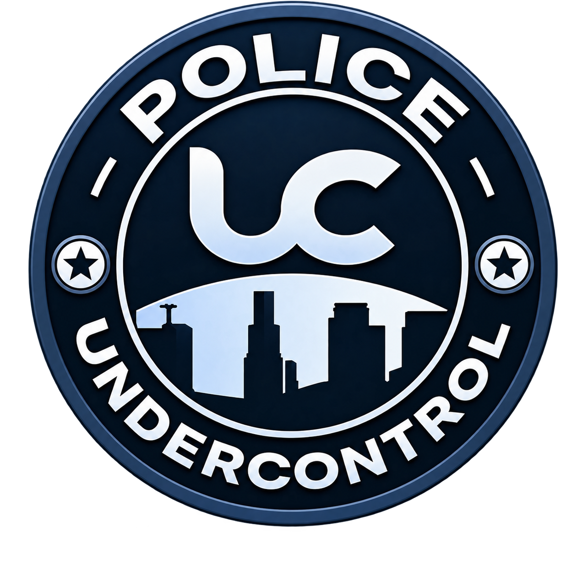

Roleplay pred vsem ostalim
Vsaka mehanika obstaja zato, da podpira zgodbo — ne obratno. Nasilje brez razloga, pobegi pred posledicami in igranje na rezultat pri nas nimajo prostora. Karakter, ki ga ustvariš, živi z vsemi svojimi odločitvami.
UnderControl RP ni še en strežnik po vrsti. Je slovenska RolePlay skupnost, zgrajena od temeljev na novo — z lastno skripto, resnimi posledicami in mestom, ki se spreminja glede na to, kaj v njem počneš. Tukaj se zgodbe ne piše po scenariju. Tukaj jih pišeš ti.
Mesto, kjer odnosi odločajo o vsem. Odpri lokal, oskrbuj drugega, zgradi imperij. Policija z resnimi orodji lovi kriminal, ki načrtuje vsako potezo. Živa ekonomija, dodelan telefon in zgodbe, ki jih igralci ne pozabijo.
Na RolePlay sceni obljublja vsak. Mi smo zapisali, kaj pri nas ni predmet pogajanja — in po tem nas lahko sodiš od prvega dne.
Vsaka mehanika obstaja zato, da podpira zgodbo — ne obratno. Nasilje brez razloga, pobegi pred posledicami in igranje na rezultat pri nas nimajo prostora. Karakter, ki ga ustvariš, živi z vsemi svojimi odločitvami.
Denar ima težo. Vsak posel, ki ga odpreš, potrebuje dobavitelja, stranko in tveganje. Nič ne pade z neba.
Prijava na Discordu dobi odgovor, ne tišine. Administracija je ločena od igre — nihče ne sodi v svoji zadevi.
Podpora strežniku ti prinese vidnost in ugodnosti — nikoli prednosti, ki bi pokvarila igro drugim.
Ne kupujemo paketov na hitro. Sistemi so pisani za UnderControl in se razvijajo skupaj s skupnostjo.
Številke se osvežujejo ob koncu vsake sezone. Zadnja posodobitev: sezona 01.
Los Santos smo predelali tako, da vsaka soseska nekomu nekaj pomeni. Podjetja imajo lastnike, ulice imajo zgodovino, policija ima evidenco. Ko se naslednjič vrneš, mesto ni tam, kjer si ga pustil.

Nismo strežnik, ki se odpre in čaka. Vsaka sezona ima cilj, vsak cilj ima rok in vsak rok javno objavimo — da nas skupnost lahko drži za besedo.
Novih sistemov ne dodajamo zato, ker jih imajo drugi. Dodamo jih, ko skupnost pokaže, da bi z njimi nastale boljše zgodbe. Vsaka posodobitev ima zapisano, kateri roleplay omogoča.
Enaka pravila za vse — za novinca, za lastnika frakcije in za člana ekipe. Vsaka administrativna odločitev je zabeležena, vsak izrek kazni je obrazložen in vsak igralec ima pravico do pritožbe.
Strežnik na namenski strojni opremi, redni restarti, nadzor zmogljivosti in testno okolje pred vsako večjo posodobitvijo. Lag ni del roleplaya.
Mesečna vprašanja skupnosti, odprt kanal za predloge in javen razvojni načrt. Kar dobi podporo igralcev, pride na vrsto — in to povemo naglas.
Strežnik, glasovni strežnik in razvoj stanejo. Kdor želi pomagati, dobi vidnost v skupnosti in prednost v vrsti — nikoli močnejšega orožja ali več denarja v igri.
Plačila ne pobiramo na spletni strani. Prijaviš se z Discord računom, izbereš paket, nakup pa dokončaš neposredno pri naši ekipi na Discordu.
WhiteList vloga te vodi korak za korakom. Ne iščemo popolnih igralcev — iščemo tiste, ki jim je za zgodbo mar. Odgovor prejmeš v 24 – 48 ur.
UnderControl RP je slovenski FiveM RolePlay strežnik. Igraš lik v mestu Los Santos — civilista, policista, mehanika, člana organizacije — in vse odločitve tega lika imajo posledice. Poudarek je na resnem, poglobljenem roleplayu in ne na tekmovanju.
Najprej se pridruži našemu Discordu in preberi pravila. Nato oddaj WhiteList vlogo na tej strani. Vlogo pregleda ekipa in odgovor prejmeš običajno v 24 do 48 urah. Ko je vloga odobrena, se s FiveM povežeš na naš strežnik.
Ne. Izkušnje pomagajo, niso pa pogoj. V vlogi nas zanima predvsem to, ali razumeš osnovna pravila in ali si pripravljen igrati svojega lika dosledno. Novim igralcem na Discordu pomagamo z vodiči in mentorstvom prvih dni.
Najnižja starost za WhiteList je 16 let. Izjeme so mogoče, če igralec v vlogi pokaže izrazito zrelost, a o tem odloča ekipa za vsak primer posebej.
Ne. V trgovini ni ničesar, kar bi ti dalo prednost v igri pred drugimi igralci. Kupiti je mogoče vidnost v skupnosti, prednost v čakalni vrsti in kozmetične ugodnosti. Denar v igri, orožje ali vozila s prednostjo se ne prodajajo.
Ker želimo, da vsak nakup potrdi človek iz naše ekipe. Na strani se prijaviš z Discord računom in izbereš paket, dogovor in plačilo pa nato dokončaš neposredno na Discordu. Tako imamo pregled nad vsako transakcijo in nič se ne izgubi.
Na Discordu odpri ticket v kanalu za prijave. Priloži posnetek ali sliko in čim natančnejši opis dogodka. Pritožbe na kazen obravnava druga oseba, kot je kazen izrekla — nihče ne odloča o svoji zadevi.
Mesto je odprto. Vloga traja deset minut, odgovor prejmeš v enem dnevu, zgodba pa se lahko vleče leta.
Pravila zadnjič posodobljena: 30. avgust 2026